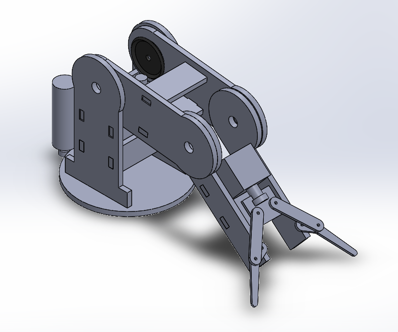
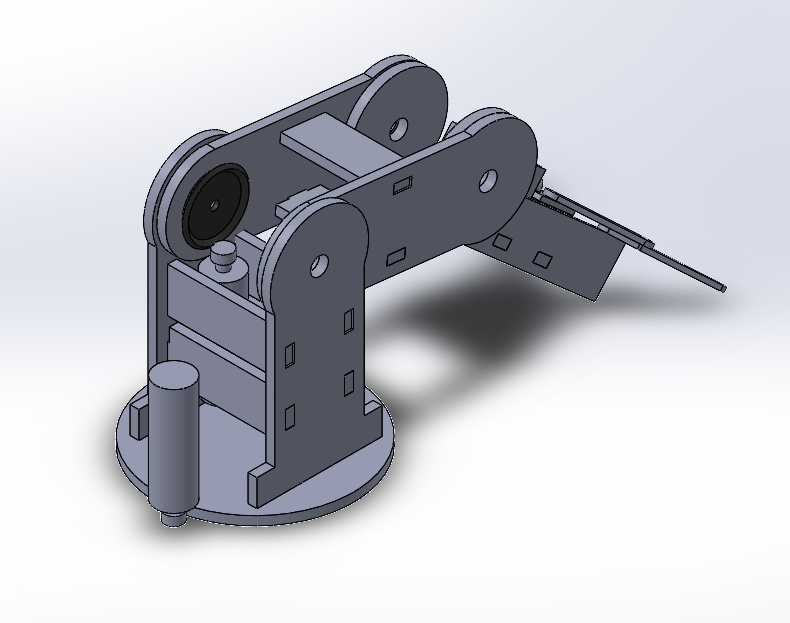
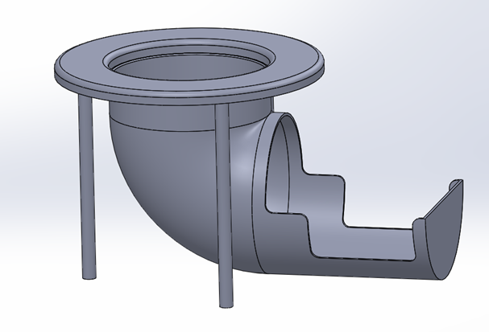

|
The Arm Game
ME-405 Final Project
|
|
The Arm Game
ME-405 Final Project
|
Jacob Bograd, Nick De Simone, Horacio Albarran
There are ten .py files needed to be residing on the micro-controller side in order for it to function ideally. Such files allow for closed loop control of the used motor as well as providing with the required calculations in order to operate the arm, elbow, and clamping mechanism of the links.
On the other hand, there is one required file on the computer side in order to open the console for the game controller to be used and provide with the desired x,y, and z-coordinates of the desired point in space where the claw must be located in order to grab the desired object, in this case, a ping-pong ball. For further information, please refer to the following link for any documentation regarding "The Arm Game" project: https://me-405.github.io/The-Arm-Game/
The goal is to create a robotic arm that a user can control using a game controller, a PS5 game controller, and grab a pin-pong ball in order to place it in the design catching table at different locations on space. The Controller will communicating to the host computer over a library obtained through GitHub, and the host controller will then inter-operate the controller inputs and send them to a l476RG Nucleo. The Nucleo will then read the given input arguments,which will be given as an x,y, and z-coordinates, and transform them into the respective motor PWM values as well as angle for the servos. The Nucleo will then also send the encoder values back to the computer. All of the calculations will be handled on the computer side, the Nucleo will only be setting the PWM values for the respective motors and/or servos in order to get to the specified position for the claw at the end of the robotic arm.
The arm will contain a calibrate function that will zero the base. Once the base is calibrated the arm will go to the minimum value and set the encoder value to be zero in order to the to a position specified as "its origin" initial position.
Red electrical Tape - 12V Motor \ Yellow electrical Tape - 7V Servo \ Green Electrical Tape - 5V? MicroServo \ Blue with Green - GND \ Black with Yellow - 7V
White - Servo0 \ Blue - Servo1 \ Black - Servo2\ Yellow - Servo3
| Qty. | Part | Source | Est. Cost |
|---|---|---|---|
| 2 | Pittperson Gearmotors | ME405 Tub | - |
| 1 | l476RG Nucleo with Shoe | ME405 Tub | - |
| 4 | MG996R Servos[Package] | Amazon | 26.99 |
| 4 | SG90 Micro Servo [Package] | Amazon | Unknown |
| 1 | Arm Structure and Base [3-D printed] | Bonderson's Building | - |
| 1 | Game Controller [PS5 controller] | Jacob's Toolbox | 59.99 |
| 1 | Gear [If needed] | 3-D printed | - |
| 7 | M4 bolt and nuts | Ace Hardware | - |
| 1 | Ping-Pong ball | Undefined | - |
Pittperson Gearmotors https://www.ebay.com/itm/144350295705?hash=item219bf2b699:g:6eIAAOSwj59hzPha
The following images display an overview of the hardware design which was 3D printed 

The following model was constructed to be able to catch the ping-pong ball in a safe manner. 
The system was certainly test various times in order to identify some of the physical constraints. Each component of the systems was firstly individually test. Meaning that code for the rotation of the based was test first with base code in order to make sure that the PWM signals were being send appropriately to the motor and that the motor behaved appropriately. Afterwards, the servos were tested in order to understand the corresponding values that moved the servos and making the correlation between the signals send and the degree of rotation of the servos. Since we were dealing with a 2-link robotic arm, we first run iterations on python in order to account for singularity as well as identifying the possible outcomes of each position that we gave to the system. It must be said that the system did not behave as it was meant to behave various times, and iterations were certainly done among the aforementioned tests while also using an extra-port in order to open a new console that helps us with debugging the code since we were able to see the outputs generated through our code that were send to the console while running the computer file onto another port.
Since it was found that singularity was causing some "weird" behaviors of the mechanism, it is recommended that more time is spend on the derivation of the equations obtained in the "Vector_Coordinate_Function.py" file in order to obtained a better behavior of the mechanism. It would also be recommended to obtained some servos that provide with a stronger torque since it was visually seen that the provided servos were having some issues when trying move the mechanism due to its weight.
Please refer to the following link for the hardware parts:
The following video provides with the final functioning of the mechanism https://user-images.githubusercontent.com/97562028/157775190-7329a550-d666-48c8-a3db-366ec8aceaca.mp4